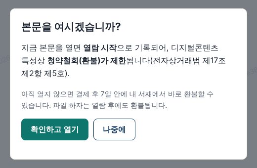

AI로 판매 사이트를 다 만들었다. 매출은 0원이다
사이트는 완성됐습니다. 회원가입이 되고, 카드 결제가 되고, 돈을 낸 사람만 책을 읽을 수 있습니다. 관리자 화면에서는 매출을 보고 환불도 버튼 하나로 처리합니다. 코딩은 한 줄도 하지 않았습니다. AI와 대화만 했습니다.
그리고 지금까지 이 사이트의 매출은 0원입니다.
AI로 돈을 벌었다는 이야기는 많습니다. 제 이야기는 그 반대쪽에서 시작합니다. AI가 다 만들어 주는데, 왜 돈은 들어오지 않을까요. 이 질문에 답하려면 무엇이 쉬워졌고 무엇이 그대로인지를 갈라 봐야 합니다.
쉬워진 쪽: "만들어 줘" 네 글자
저는 보건계열 교수입니다. 학생을 가르치고 논문을 쓰지만, 프로그램을 짜 본 적은 없습니다. 쓴 도구는 클로드 코드(Claude Code)입니다. 겉보기엔 챗GPT 같은 대화창인데, 설명 대신 직접 만듭니다. 파일을 만들고, 프로그램을 짜고, 돌려 보고, 결과물을 건넵니다.
제가 처음 건넨 말은 이랬습니다.
메디컬 사이언스라는 1인 출판사를 만들고 사이트를 만들 거야. 여기에서 결제하는 걸 어떻게 해야 하는지 자세하게 알려 줘.
설명을 듣고 나서 한 말은 "만들어 줘"였습니다. 대화가 끝났을 때 손에 있던 것 중 세 가지만 꼽겠습니다.
- 결제창에서 누가 금액을 1원으로 바꿔 보내도 서버가 원래 가격과 다시 맞춰 보고 거절합니다.
- 책 파일을 내려받는 버튼이 없습니다. 로그인한 화면에서 한 장씩만 읽히고, 화면에는 구매자 이름이 옅게 깔립니다. 누가 찍어서 퍼뜨렸는지 알 수 있습니다.
- 처음 본문을 펼칠 때 "열면 환불이 제한됩니다"라는 확인 창이 뜹니다. 이건 뒤에서 다시 이야기할 법 때문입니다.

AI가 스스로 해커가 된 시간
제가 가장 놀란 건 마지막이었습니다. 진짜 결제 회사에 연결하기 전에, AI는 결제 회사 흉내를 내는 가짜 서버를 직접 만들었습니다. 그리고 가짜 손님이 되어 자기가 만든 사이트를 공격하기 시작했습니다.
금액을 조작해서 결제해 보고, 남의 주문을 대신 승인해 보고, 환불받은 책을 다시 열어 보고, 다른 사이트에서 몰래 요청을 보내 봤습니다. 모두 45가지. 막혀야 할 곳은 막히고 통과해야 할 곳은 통과하는 걸 확인한 뒤에야 "다 됐다"고 보고했습니다. 사람 개발자에게 맡겼다면 며칠은 걸렸을 확인입니다. 그동안 제가 한 일은 기다린 것뿐입니다.
여기까지가 쉬워진 쪽입니다. 몇 년 전이라면 개발자를 찾아 견적을 받고 몇 달을 기다렸을 일이, 대화 몇 번으로 줄었습니다.
그대로인 쪽: 돈이 막힌 세 곳
첫째, 결제 버튼 뒤의 서류
내 사이트에서 카드 결제를 받으려면 카드사가 아니라 결제대행사(PG)와 계약해야 합니다. 토스페이먼츠, KG이니시스 같은 회사입니다. 그리고 이 회사들은 심사를 합니다. AI가 정리해 준 준비물은 이렇습니다.
| 준비물 | 어디서 | 놓치기 쉬운 점 |
|---|---|---|
| 사업자등록 | 세무서 | 전자책 출판은 부가세 면세 업종 |
| 통신판매업 신고 | 구청 | 작은 규모는 면제되기도 하지만 카드사 심사에서 요구하는 경우가 많다 |
| 사이트 아래쪽 사업자 정보 | 내 사이트 | 사업자등록증과 한 글자라도 다르면 떨어진다 |
| 이용약관·개인정보처리방침·환불 규정 | 내 사이트 | 하나라도 없으면 떨어진다 |
| 판매 중인 상품 1개 이상 | 내 사이트 | 빈 가게는 심사하지 않는다 |
비용도 있습니다. 제가 확인했을 때 토스페이먼츠 기준 가입비 22만 원, 연 관리비 11만 원, 카드 수수료 3.4%에 부가세가 붙었습니다. 요금은 바뀔 수 있으니 가입 전에 꼭 다시 보세요.
AI는 이 순서를 완벽하게 정리해 줍니다. 하지만 세무서와 구청에 가는 건 제 다리입니다. 제 사이트가 아직 0원인 첫 번째 이유가 이것입니다. 서류를 다 끝내지 못했습니다.
둘째, 법은 AI가 대신 책임지지 않는다
전자책은 다 읽고 나서 환불을 요구받으면 곤란한 물건입니다. 전자상거래법은 이런 디지털콘텐츠의 환불을 제한할 수 있게 해 둡니다. 단, 조건이 있습니다. 미리보기처럼 사기 전에 내용을 확인할 방법을 주고, 열면 환불이 제한된다는 사실을 미리 알려야 합니다. 이걸 빠뜨리면 다 읽은 책도 환불해 줘야 할 수 있습니다. 앞의 확인 창은 이 조건을 지키려고 넣은 것입니다.
부끄러운 이야기도 하나 하겠습니다. 이 사이트와 별개로, 국가시험 기출문제를 담은 공부용 앱도 AI와 함께 만들었습니다. 잘 만들어졌습니다. 그런데 공개 직전에, 기출문제를 모아 판 사람들이 저작권법 위반으로 처벌받은 판례를 확인했습니다. 앱은 공개하지 않고 내렸습니다. AI는 앱을 만들어 주지만, 법정에 서는 사람은 AI가 아니라 저입니다.
셋째, 그릇보다 내용물
사이트는 그릇입니다. 담을 책은 제가 써야 합니다. 그리고 이게 가장 오래 걸립니다.
여기서 중요한 변화가 하나 보입니다. 판매 사이트를 만드는 일이 대화 몇 번이 되면서, 사이트는 더 이상 경쟁력이 아니게 됐습니다. 누구나 만들 수 있으니까요. 남는 경쟁력은 그 안에 무엇을 담느냐, 하나뿐입니다. 제 경우엔 강의실과 검사실에서 쌓은 전공 지식입니다.
AI로 돈을 벌고 싶다면, 오늘 할 일
- 팔 수 있는 내용물부터 적어 보세요. 사이트나 앱 말고, 당신이 남보다 잘 아는 것 한 가지. 그게 없으면 AI가 만든 가게는 빈 가게입니다.
- 결제 회사 심사 준비물을 미리 확인하세요. 위 표의 다섯 가지 중 지금 없는 것이 몇 개인지 세어 보면 첫 매출까지의 거리가 보입니다.
- 돈과 법이 걸린 곳은 AI가 "다 됐다"고 해도 한 번 더 보세요. 결제 금액, 약관, 저작권.
AI가 없애 준 건 기술의 벽입니다. 사업의 벽은 그대로 서 있습니다. 다만 벽 하나가 사라진 만큼, 남은 벽에 쓸 시간이 생겼습니다.
다음 글에서는 결제 회사 심사를 실제로 받는 과정을 적겠습니다. 첫 판매가 생기면 그 숫자도 여기에 그대로 적겠습니다. 0원에서 시작하는 기록이니까요.
이 글에 나온 것
- 쓴 도구: 클로드 코드(Anthropic)
- 결제대행사 요금: 토스페이먼츠 공개 요금 기준(글 쓴 시점). 가입 전 공식 사이트에서 다시 확인하세요.
- 디지털콘텐츠 청약철회 제한: 전자상거래 등에서의 소비자보호에 관한 법률 제17조
- 사이트 화면은 실제 결제 연결 전 시험용 화면입니다.